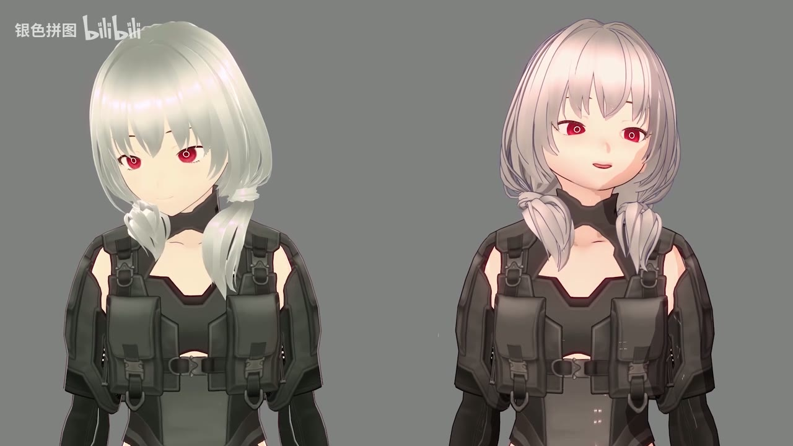
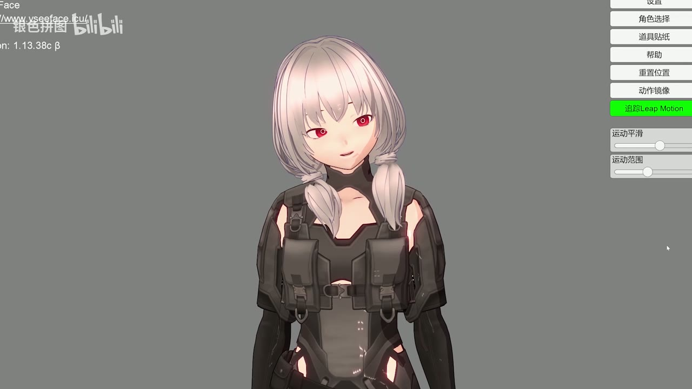
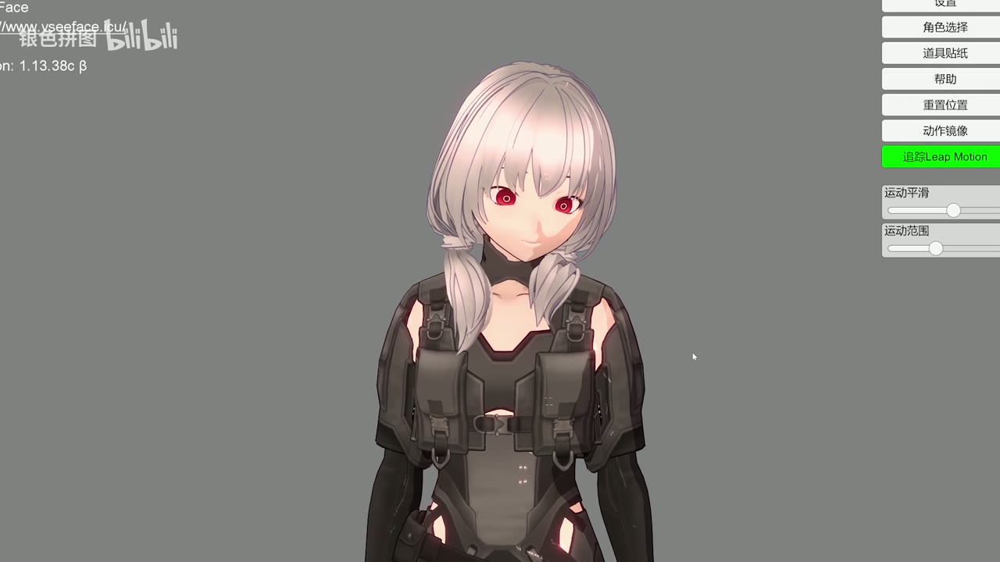
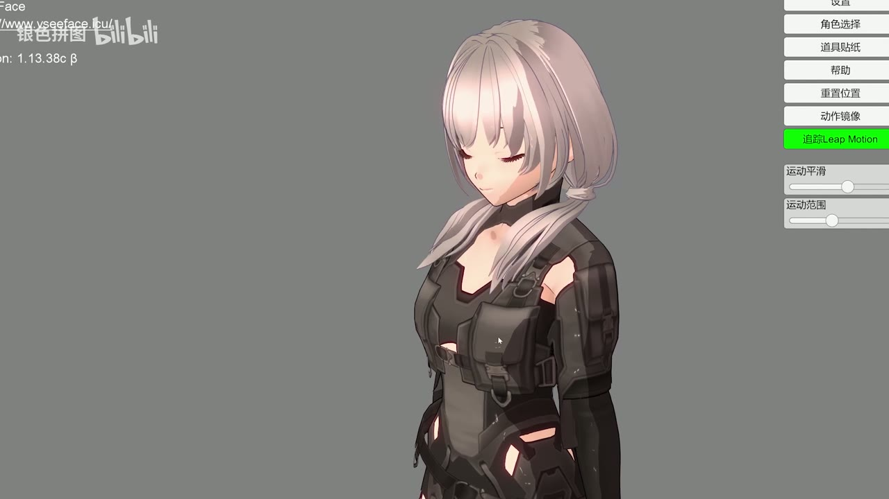
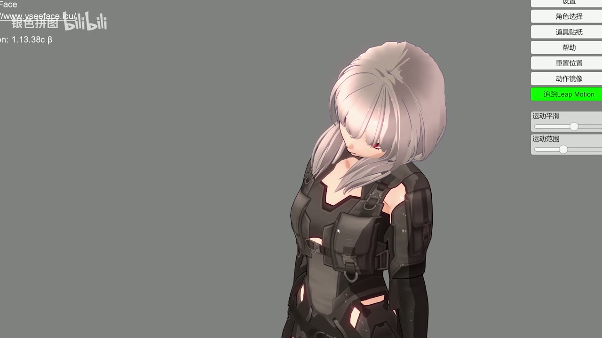
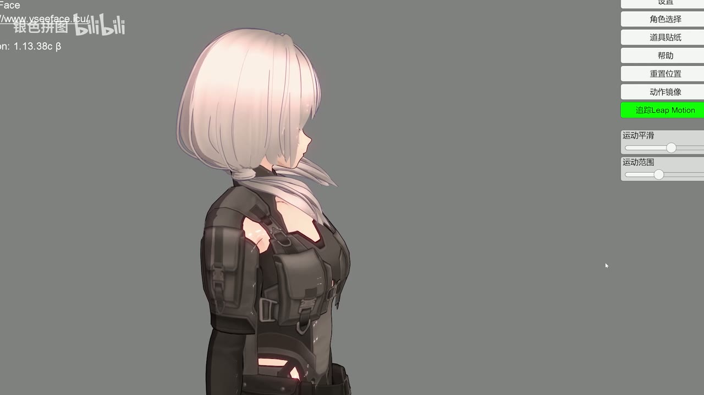

其他
让模型更显立体
先看左右两边差在哪

两边是同一套银发双马尾和黑色战术装。左边头发几乎铺成白色，头顶只有几条硬高光；脸很平，鼻梁和脸颊几乎没有阴影；口袋和带子是一块哑光深灰，外圈描边比较实。右边头发分成浅灰层次，发缝里有暗部，外缘有一圈浅边光；鼻梁、眼下和脸颊有明暗，能看见一点腮红；背心、肩甲和口袋上有顺着表面走的高光。描边两边都还在，所以体积不是靠关掉轮廓线出来的。这段没有贴图、法线或灯光面板。
立体的一侧切进 VSeeFace

大约 5.5 秒，并排消失，只留下右边那种有体积的模型。这些按钮从出现到结束都没有被点开：没有设置窗口，追踪 Leap Motion 一直是绿的，运动平滑的圆点靠右、运动范围的圆点在中间附近，两条都没有被拖动。立体感在切进来之前就已经在模型上，不是这列按钮调出来的。
转到四分之三，看头发和衣服


把身子转开之后，头发不再是一整块白，亮面、发缝暗部和边缘光会分开。战术装上的高光留在带子、口袋盖和肩甲转折处，暗部留在口袋下面和腋下，衣服就从一块平涂变成有厚度的装备。右侧那一列按钮在这两张里仍然原样。
低头和侧脸，看轮廓还在不在


低下头时，亮面留在头顶，刘海下面、鼻尖下方和衣领会暗一截，脸不再是一张均匀的色块。转到正侧之后，头发有前后的厚度，胸前的口袋和带子仍然鼓出高光，剪影不是一条平的黑边。整段都没有打开新的面板，也没有口播字幕；简介里只有背景音乐。